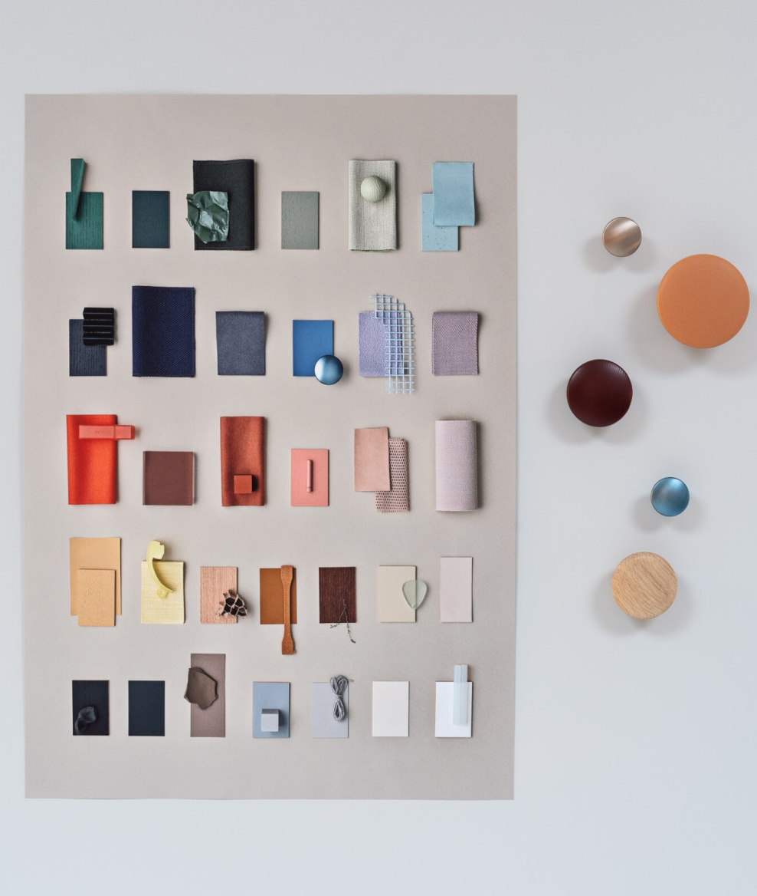
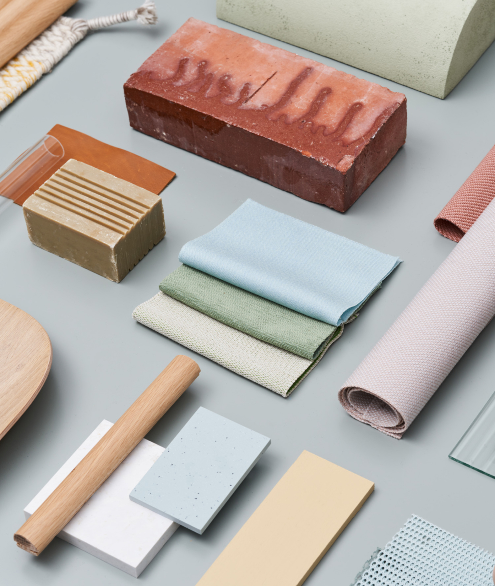
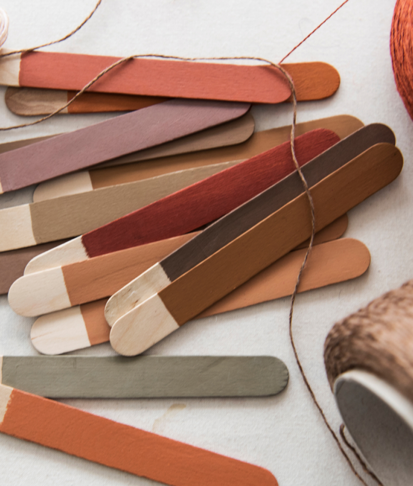
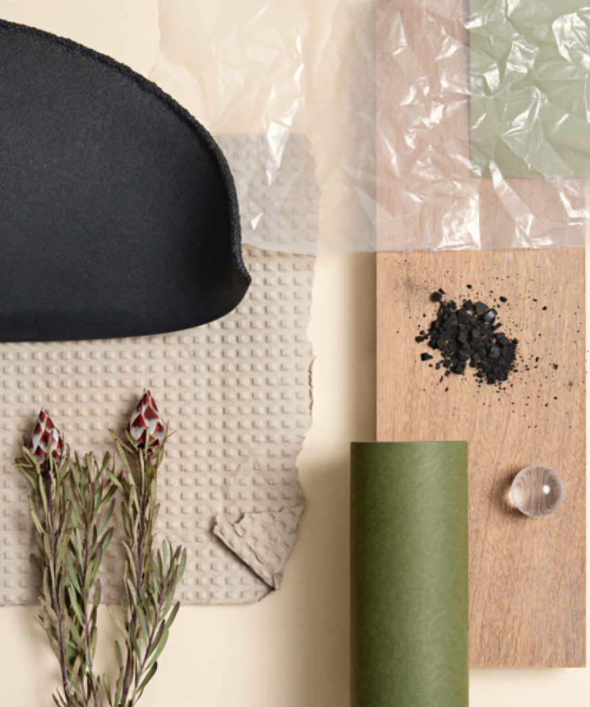
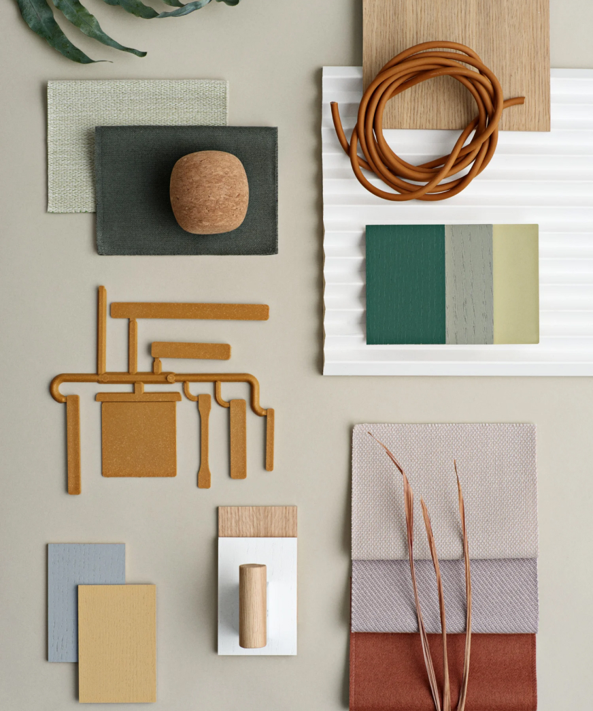
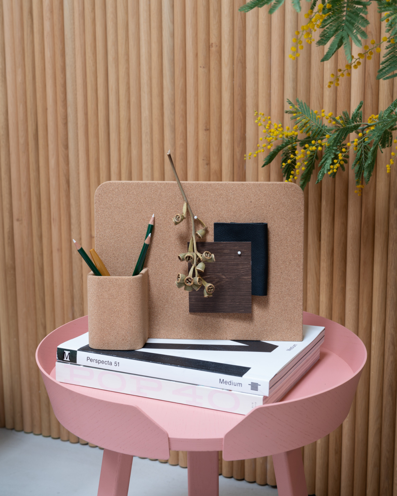
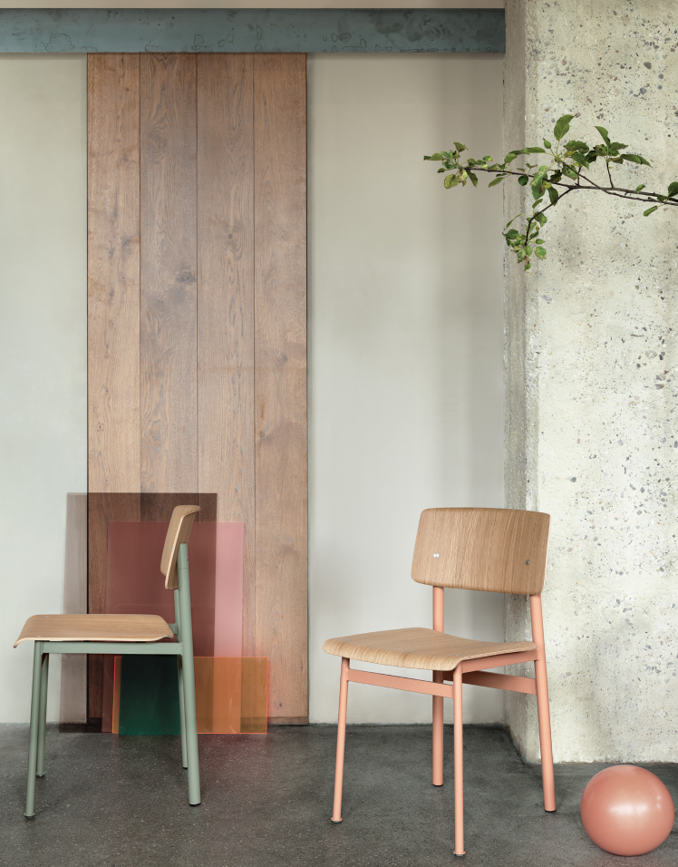
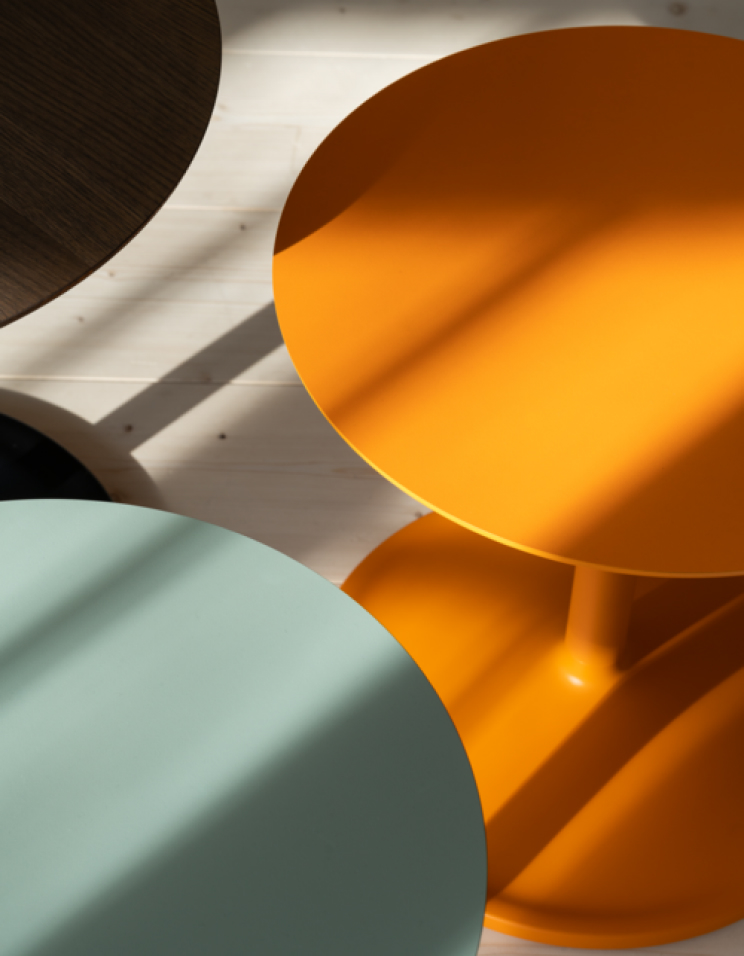
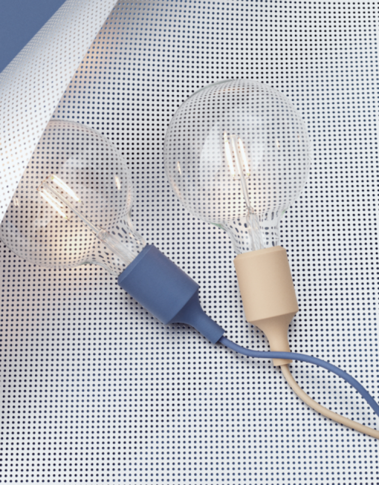
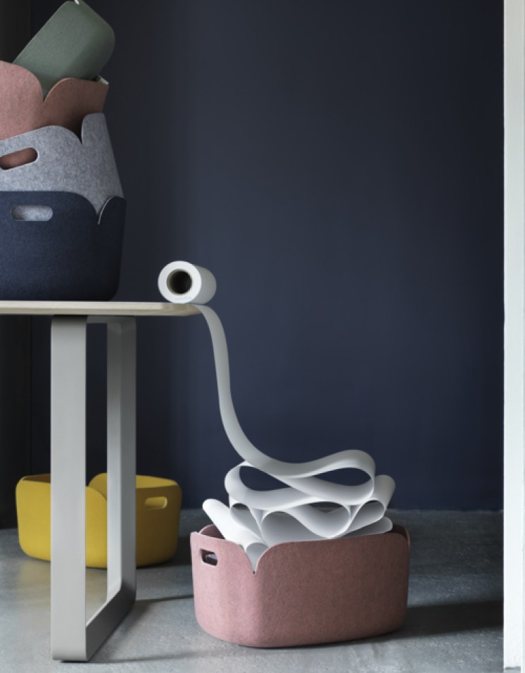

NEW PERSPECTIVES
ON SCANDINAVIAN DESIGN
Muuto & Technology since 1973
COLORFUL PERSPECTIVES
IN EVERYDAY LIFE
Color has been an integral part of everyday life for humans since forever. How
one
person sees a color is influenced by their cultural and social identity,
making color an entirely
subjective thing.



오래 지속되는 디자인을 만드는 것은 내구성과 강도뿐만 아니라 미학의 수명에 관한 것입니다. 필요한 색상 안료의 양은 재활용 플라스틱의
초기 색상에 따라 다릅니다. 재활용 플라스틱의 초기 색상은 종종 칙칙한 색조 범위입니다. 재료에 색상을 추가하기 위해 처녀 플라스틱이
원료의 운반체로 사용됩니다. 더 많은 색상 안료가 필요할수록 더 많은 양의 천연 플라스틱이 필요했습니다.우리는 재활용 플라스틱 소재
를 개발하여 동일한 Muuto의 상징적인 색상, 디자인 및 내구성을 갖춘 의자를 만들 수 있으며, 동시에 각 좌석에는 상당한 비율의 재활용
물질을 보관할 수 있습니다.
Muuto에서 색상은 우리 우주의 중심에 있으며, 색상이 방에 들어갈 때의 느낌에 영향을 미친다는 믿음에 뿌리를 두고 있습니다. 색상에 대
한 우리의 인식은 전적으로 개별적입니다. 색상이 영감을 주는지, 편안함을 주는지 또는 활력을 주는지 여부는 개인의 감각을 기반으로 합
니다. 우리 안에 이러한 감정을 불러일으키는 것은 활기찬 장미 직물 위의 부드러운 나무의 따뜻함에서 광택이 나는 알루미늄의 우아함에
이르기까지 무엇이든 될 수 있습니다.


우리는 디자이너와 함께 신제품을 개발할 때마다 그것이 건강, 주변 환경 및 환경에 미칠 영향을 생각합니다.
우리는 지속적으로 새로운 관점을 추구하고 업계 최고와 협력하여 새로운 기술과 재료에 대해 학습합니다. 올바른 재료를
찾는 것은 우리 디자인 프로세스의 필수적인 부분이며 우리는 디자인을 구성하는 모든 재료를 매우 중요하게 생각합니다.
목재 및 직물과 같은 대형 구성 요소에서 포장에 이르기까지. 시각적인 매력, 촉감, 내구성 외에도 소재의 기원과 수명 주
기도 고려합니다.

EXPLORE
MORE OF
OUR DESIGN
스칸디나비아 디자인 전통에 뿌리를
두고 있는 MUTTO만의 크리에이티
브한 다양한 제품을 만나보세요.

REFINED SIMPLICITY —
LOFT CHAIR

ELEGANCE IN SUBTLE DETAILS —
SOFT SIDE TABLE

MODERN SIMPLICITY —
E27 PENDANT LAMP

THOUGHTFUL STORAGE —
RESTORE SERIES